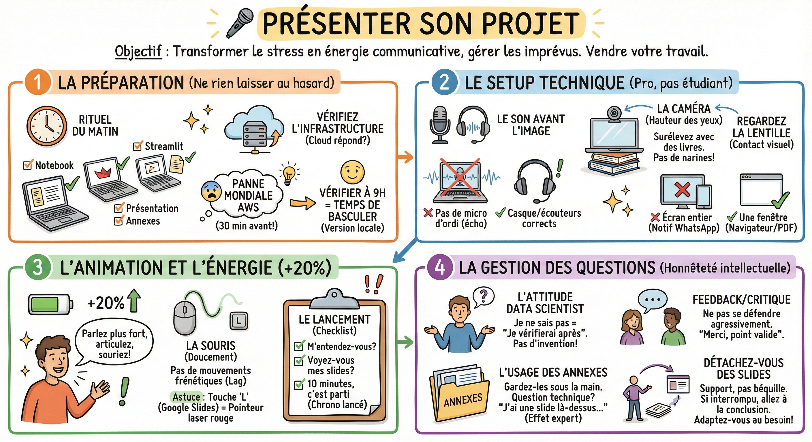

🎤 Présenter son projet¶

Objectif¶
Transformer le stress en énergie communicative et gérer les imprévus techniques comme un professionnel. C'est le moment de vendre votre travail.
La préparation
Ne laissez rien au hasard. L'improvisation technique est interdite.
- Le rituel du matin (pas 30 min avant) :
- Ouvrez tout : Lancez votre notebook, votre démo Streamlit, votre présentation et vos annexes dès le matin.
- Vérifiez l'infrastructure : Assurez-vous que le serveur cloud répond.
- L'anecdote vécue : J'ai découvert une panne mondiale d'AWS 30 minutes avant une soutenance car je n'avais pas vérifié le matin. Résultat : panique totale. Si j'avais vérifié à 9h, j'aurais eu le temps de basculer sur une version locale.
Le setup technique
Vous n'êtes plus étudiant, vous êtes présentateur.
- Le son avant l'image :
- Une image floue passe, un son qui coupe est insupportable.
- ❌ Pas de micro d'ordi (écho, bruit de ventilo).
-
✅ Utilisez un casque ou des écouteurs corrects.
-
La caméra (le contact visuel) :
- Hauteur des yeux : Surélevez votre ordi avec des livres. On ne veut pas voir vos narines ni le plafond.
-
Regardez la lentille : Quand vous parlez, ne regardez pas l'écran, regardez le point vert de la webcam. C'est le seul moyen de regarder les gens "dans les yeux".
-
Le partage d'écran :
- ❌ Ne partagez jamais votre "écran entier" (Notification WhatsApp "On mange où ?" en plein milieu).
- ✅ Partagez uniquement "une fenêtre" (celle de votre navigateur/PDF).
L'animation et l'énergie
La visio mange 20% de votre énergie. Il faut compenser.
-
Le dynamisme (+20%) : Parlez un peu plus fort, articulez plus, souriez plus. Si vous avez l'impression d'en faire trop, pour eux, ce sera juste dynamique.
-
La souris (doucement) : N'agitez pas votre souris frénétiquement autour d'un point. Avec le lag vidéo, ça donne le tournis.
-
Astuce : Dans Google Slides, tapez sur la touche L pour activer le pointeur laser rouge.
-
Le Lancement (checklist) :
- "Est-ce que vous m'entendez bien ?"
- "Est-ce que vous voyez mes slides ?"
- "Nous avons 10 minutes, c'est parti." (Lancez votre chronomètre à côté).
La gestion des questions
C'est là qu'on juge votre honnêteté intellectuelle.
- L'attitude data scientist :
- Si vous ne savez pas, dites-le. "Je n'ai pas la réponse exacte là maintenant, je vérifierai après la séance." C'est mieux que d'inventer n'importe quoi.
-
Si on vous fait une critique (feedback) : Ne vous défendez pas agressivement. Dites : "Merci, c'est un point valide, je n'y avais pas pensé sous cet angle."
-
L'usage des annexes :
- Gardez vos notes manuscrites et vos slides techniques (annexes) sous la main.
- Si une question pointe vers un détail technique, sortez la slide d'annexe : "J'ai justement une slide sur l'architecture..." (Effet expert garanti).
Détachez-vous des slides
Les slides sont un support, pas une béquille.
- Si le jury vous interrompt pour aller directement à la conclusion : Faites-le. Ne dites pas "Attendez, j'y arrive dans 3 slides". Sautez les slides et adaptez-vous. Vous êtes là pour répondre à leur besoin, pas pour réciter un poème.
Ce qu'il faut retenir¶
- Vérifiez toute votre infrastructure technique le matin (pas 30 minutes avant) pour avoir le temps de basculer sur un plan B.
- En visio, parlez 20 % plus fort et ne partagez jamais votre écran entier : partagez uniquement la fenêtre de votre présentation.
- Si vous ne savez pas répondre à une question, dites-le honnêtement : c'est une marque d'intégrité intellectuelle qui inspire confiance.
Pour aller plus loin¶
- Google Slides - Mode Présentateur — documentation officielle du mode présentateur avec notes et chrono
- OBS Studio — logiciel gratuit pour enregistrer vos démos en vidéo comme plan de secours
- Logitech Spotlight — télécommandes de présentation pour se libérer du clavier